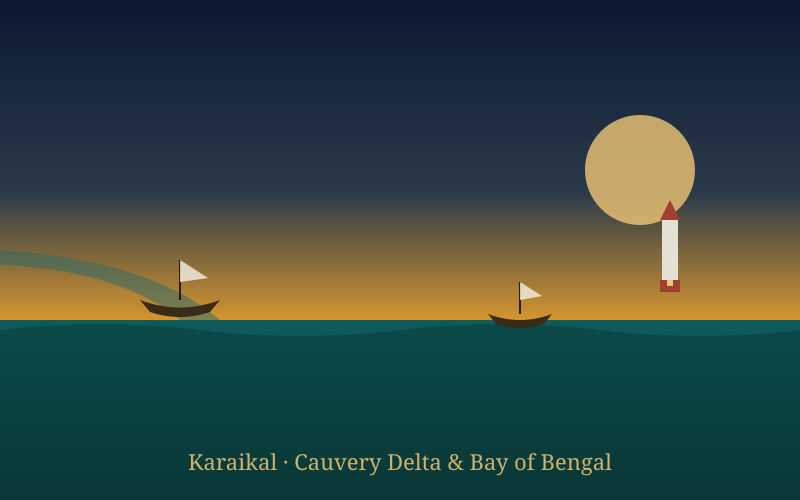
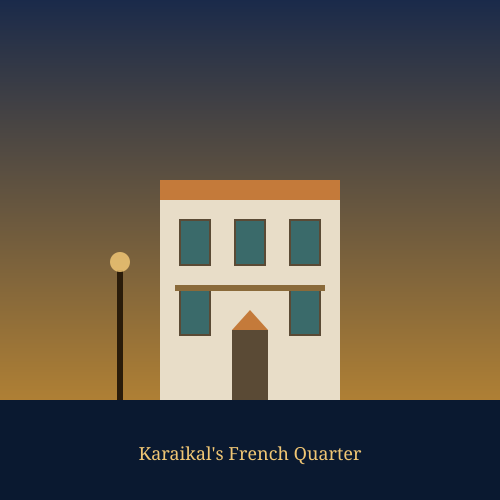
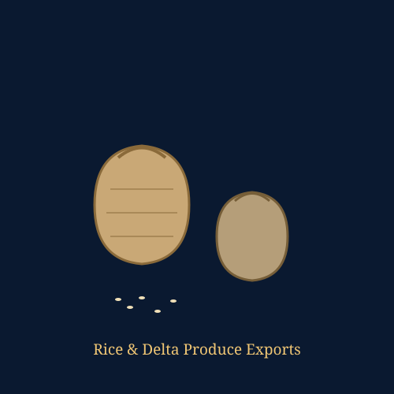
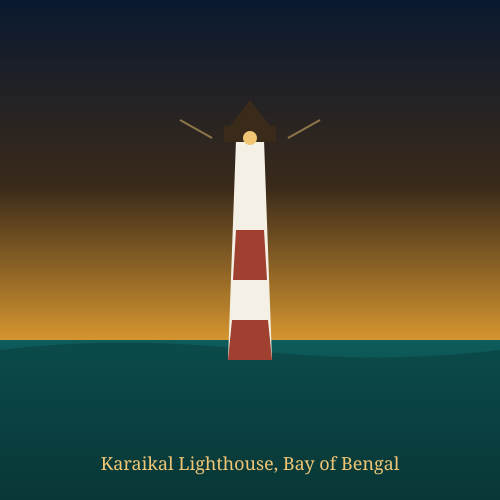

Karaikal Ancient Port Explorer
From a Chola-era trading harbour in the fertile Cauvery delta to a French comptoir that endured for over two centuries, discover Karaikal's layered maritime and colonial heritage on the Bay of Bengal.
A Coromandel Enclave with a Double Heritage
Karaikal lies on the Coromandel Coast in the fertile Kaveri (Cauvery) River delta, one of Tamil Nadu's most important rice-growing regions. As early as the 10th century, it functioned as a maritime trading hub within the Chola kingdom, its coastal position feeding into the wider Chola economic network of the Bay of Bengal.
After the Cholas, the region passed successively to the Vijayanagara Empire, the Thanjavur Nayaks, and Maratha rulers, before the French East India Company acquired Karaikal in 1739. It remained a French enclave until de facto liberation in 1954, formally becoming part of India in 1962 as one of the four territories of the Union Territory of Puducherry — alongside Pondicherry, Mahe and Yanam.
📜 At a Glance
- Location: Cauvery river delta, Bay of Bengal, Union Territory of Puducherry.
- Ancient role: Maritime trading hub of the Chola kingdom, 10th century CE.
- Colonial era: French enclave from 1739 to 1954 (formal transfer to India in 1962).
Maritime & Trade Significance
Karaikal's fortunes were shaped by the fertile Cauvery delta and its position on the Bay of Bengal, which supported both ancient coastal trade and, later, colonial-era exports.
Delta Rice Trade
Karaikal sits in the most important rice-growing region of Tamil Nadu. Grain from the Cauvery delta was a central export in both the Chola and later French colonial periods.
Chola Coastal Trade
As a 10th-century Chola trading hub, Karaikal linked the delta's agricultural surplus to coastal shipping routes along the Coromandel Coast.
French Colonial Exports
Under French administration, Karaikal exported rice, groundnuts and castor oil, contributing significant tonnage to French India's trade even during the First World War.
🇫🇷 Karaikal under the French, 1739–1954
- Acquired by: The French East India Company, part of a wave of acquisitions (Mahe, Yanam, Karaikal) between 1720 and 1739.
- Administered as: "Karikal," the southernmost of the four French enclaves that made up French India.
- Legacy today: A French Quarter with colonial-era buildings, churches, and street names, alongside Tamil temple architecture.
Two Centuries of French Administration
Karaikal became one of France's four Indian comptoirs, governed for over two centuries by French officials even as Tamil language, temple worship and social life continued largely uninterrupted. The town's French Quarter still preserves colonial-era streets and architecture, while institutions like Our Lady of Angels Church reflect the era's Christian heritage alongside older Shaivite shrines such as the Kailasanathar Temple.
During the First World War, Karaikal and the other French enclaves supplied rice, groundnuts and castor oil to the French war effort, and later negotiated customs arrangements with British Madras to manage wartime food shortages — a reminder that this small enclave was tied into much larger global currents of trade and conflict.
Chronology of Karaikal
Tracing Karaikal's journey from a Chola-era trading harbour to a French comptoir and, finally, a Union Territory of independent India.
A Chola Trading Hub
Karaikal functions as a maritime trading port within the Chola kingdom, linking the fertile Cauvery delta to Coromandel coastal trade routes.
Vijayanagara Patronage
Thirumalai Rayan of the Vijayanagara Empire builds the Jambunatha temple, reflecting continued royal patronage of the region's temples.
Maratha and Contested Rule
Control of Karaikal passes through Vijayanagara, Thanjavur Nayak, and Maratha hands amid the wider struggle for influence on the Coromandel Coast.
French Acquisition
The French East India Company acquires Karaikal, folding it into the network of French comptoirs alongside Pondicherry, Mahe and Yanam.
Wartime Trade
Karaikal contributes rice, groundnuts and castor oil exports to the French war effort during the First World War.
Integration with India
Karaikal is de facto transferred to India in 1954 and formally becomes part of the Union Territory of Puducherry in 1962.
The Delta, the Comptoir & the Coast of Karaikal
Illustrated impressions of Karaikal's coastline, its French colonial quarter, delta trade, and coastal lighthouse.




📚 References & Further Reading
- Encyclopaedia Britannica. Karaikal. Britannica.com.
- Government of Puducherry, District Administration. History of Puducherry District. puducherry-dt.gov.in.
- Government of India, Census of India (2011). Karaikal District Population Data.
- Wikivoyage. Karaikal Travel Guide. en.wikivoyage.org.
- Karaikal District Administration. Cauvery Delta Heritage and French Colonial History. karaikaldistrict.com.